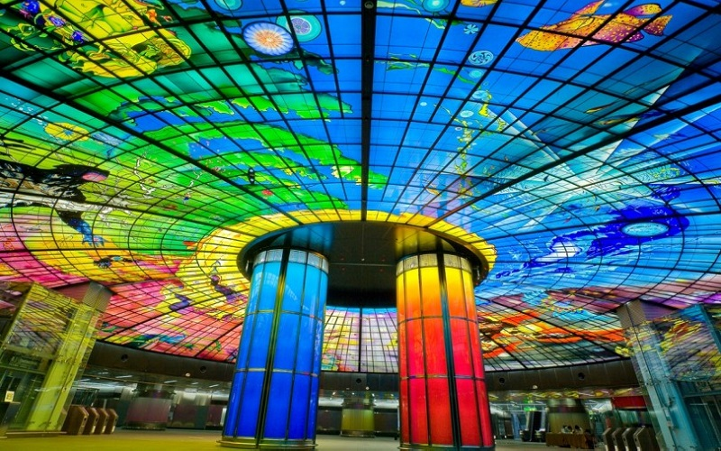
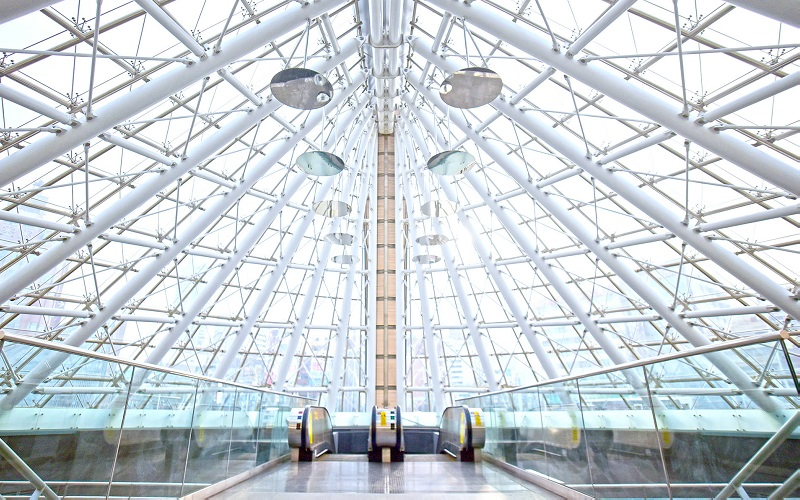
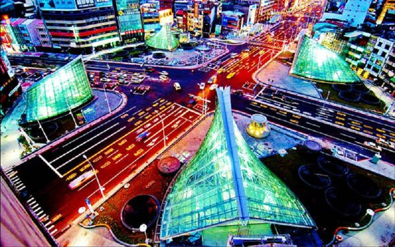

Formosa Boulevard Station
Kaohsiung City
Dome of Light
 The Kaohsiung MRT Formosa Boulevard station is the only transfer station between the Red Line and the Orange Line.
The station is named after the Formasa Incident for memories and is respected as one of the most beautiful station
in the world. "Dome of Light", being its biggest feature, is the largest glass work in the world-- 30 metres in diameter
and is made up of 4,500 glass panels. At the entrance of the station isanother public art named
"Heart of the MRT, the prayer", which serves as a landmark of Kaohsiung City.
- Best seasons: All year around
- Transportation: Take the Kaohsiung MRT to the transtion station.